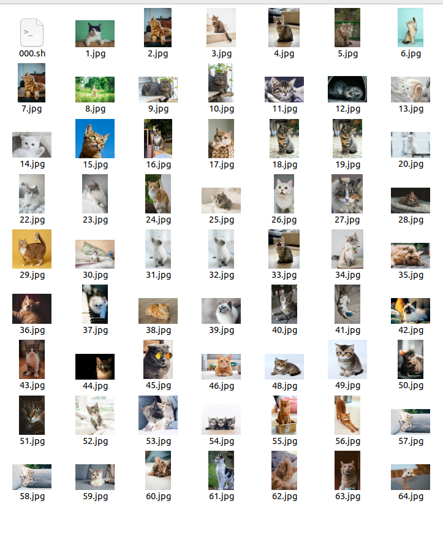

图：AI训练用猫咪图片（原始文件命名混乱，经脚本重命名后规范）
需求背景
为开展猫咪识别AI模型训练，我从免费图片素材网站下载了大量猫咪图片，但这些文件的原始命名随机且无规律（如：abc123.jpg、x987y.png等），不利于后续AI训练的数据管理和批量处理。
解决方案：Shell脚本自动化重命名
针对该问题，我在Ubuntu系统中编写了名为 000.sh 的Shell脚本，实现以下核心功能：
- 遍历指定文件夹内所有猫咪图片文件，自动跳过文件夹/非图片文件；
- 将混乱命名的文件批量重命名为 自增编号格式（如：1.jpg、2.jpg、3.jpg...n.jpg，n为图片总数）；
- 内置冲突检测逻辑，避免文件名重复导致的文件覆盖；
- 支持一键执行，大幅提升数据整理效率（手动重命名需数小时，脚本仅需数秒）。
核心脚本代码示例（000.sh）
#!/bin/bash
# 000.sh - 猫咪AI训练图片批量重命名脚本
TARGET_FOLDER="/home/xxx/cat_training_imgs" # 图片存放路径
COUNTER=1 # 自增编号起始值
# 遍历文件夹内所有图片文件（仅处理jpg/png/jpeg）
for FILE in $TARGET_FOLDER/*.{jpg,png,jpeg}; do
# 跳过非文件类型
[ -f "$FILE" ] || continue
# 定义新文件名（自增编号）
NEW_NAME="${TARGET_FOLDER}/${COUNTER}.jpg"
# 避免文件名冲突
while [ -f "$NEW_NAME" ]; do
COUNTER=$((COUNTER + 1))
NEW_NAME="${TARGET_FOLDER}/${COUNTER}.jpg"
done
# 执行重命名
mv -v "$FILE" "$NEW_NAME"
COUNTER=$((COUNTER + 1))
done
echo "重命名完成！共处理 $((COUNTER - 1)) 张猫咪图片"
效果与价值
通过该Shell脚本，原本命名混乱的猫咪图片被统一整理为1.jpg、2.jpg...n.jpg的规范格式，既保证了AI训练数据的有序性，也减少了人工操作的耗时和错误率，体现了自动化脚本在数据处理场景中的实用价值。